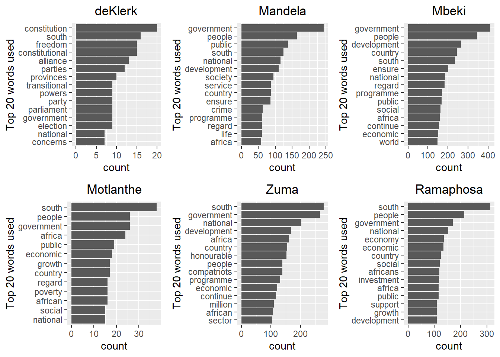
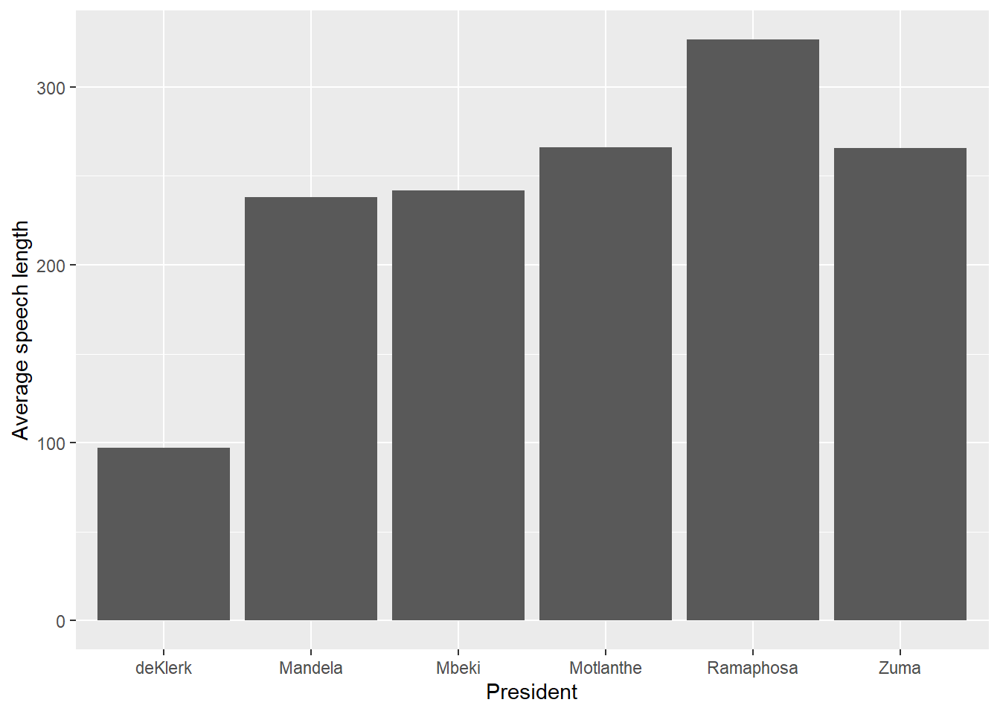
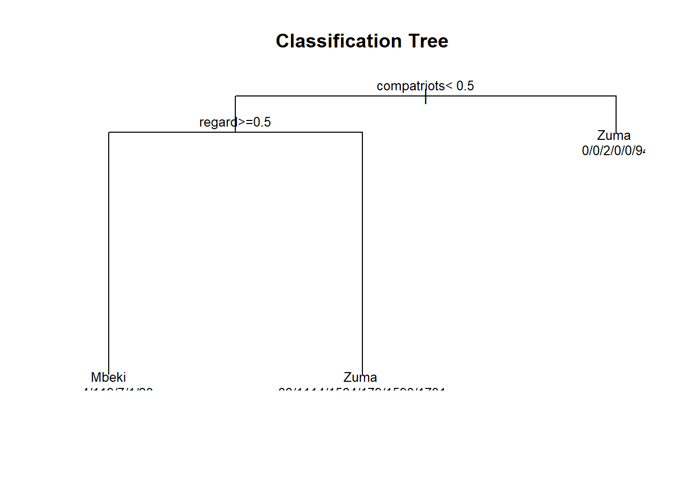
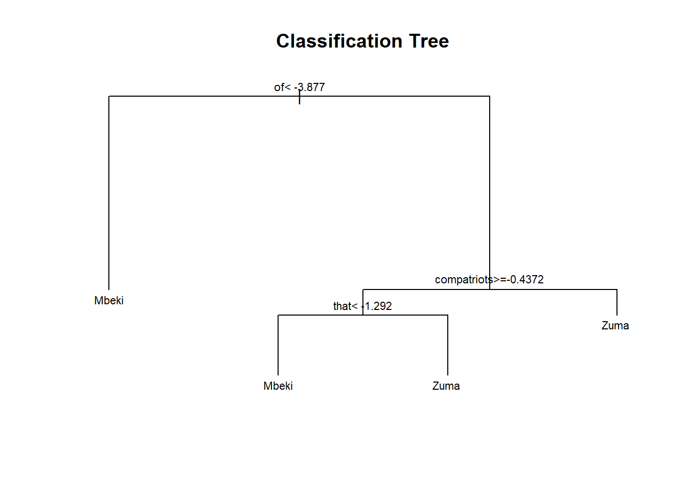
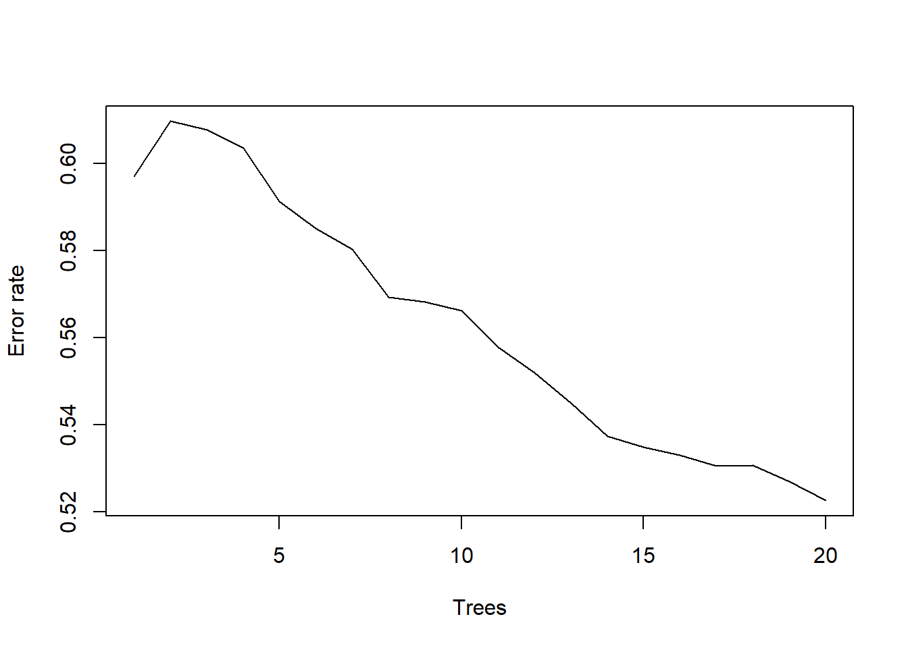
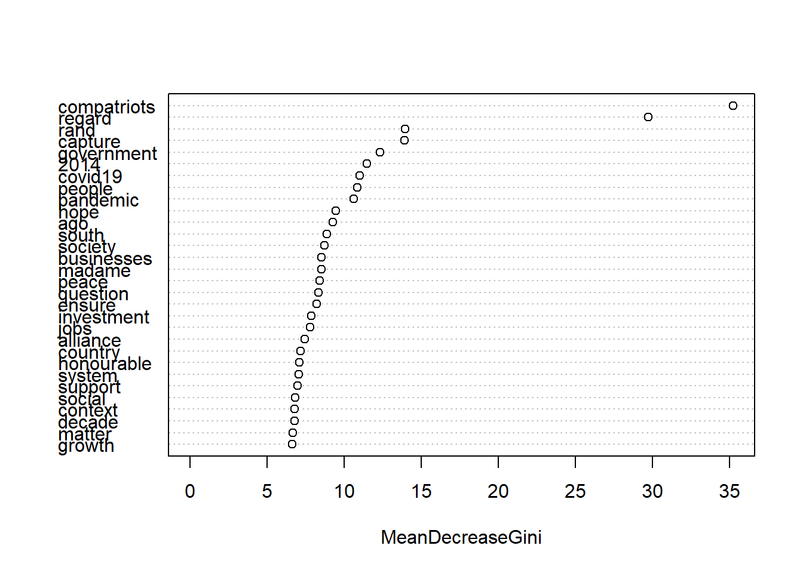
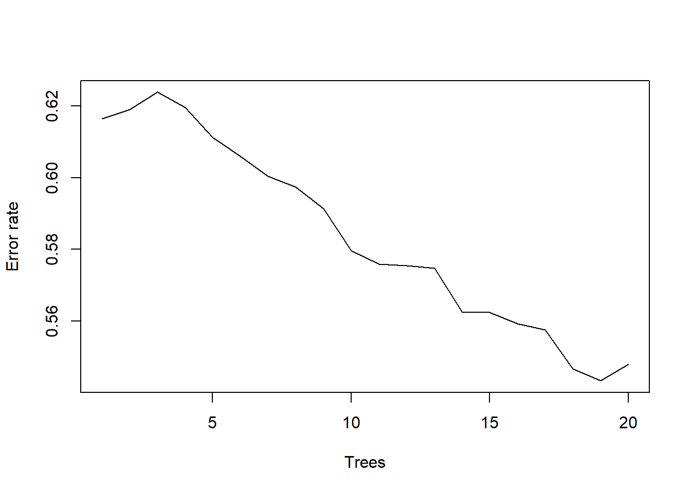
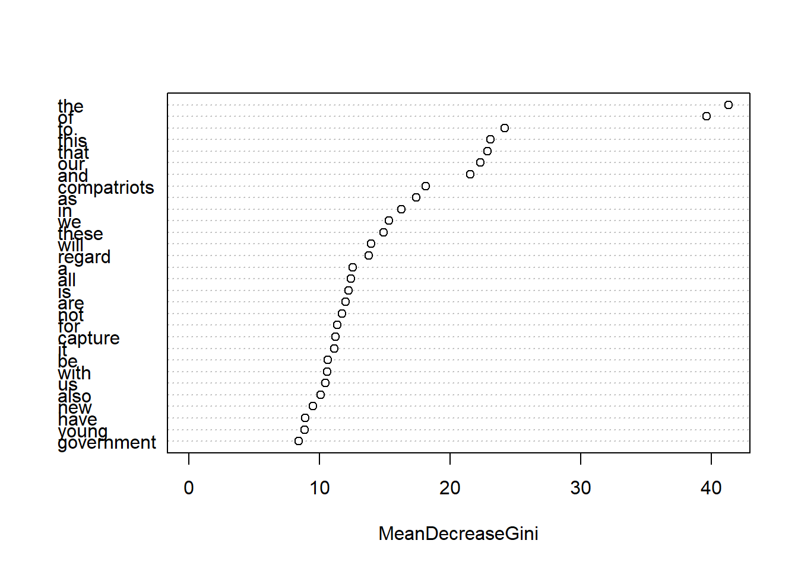
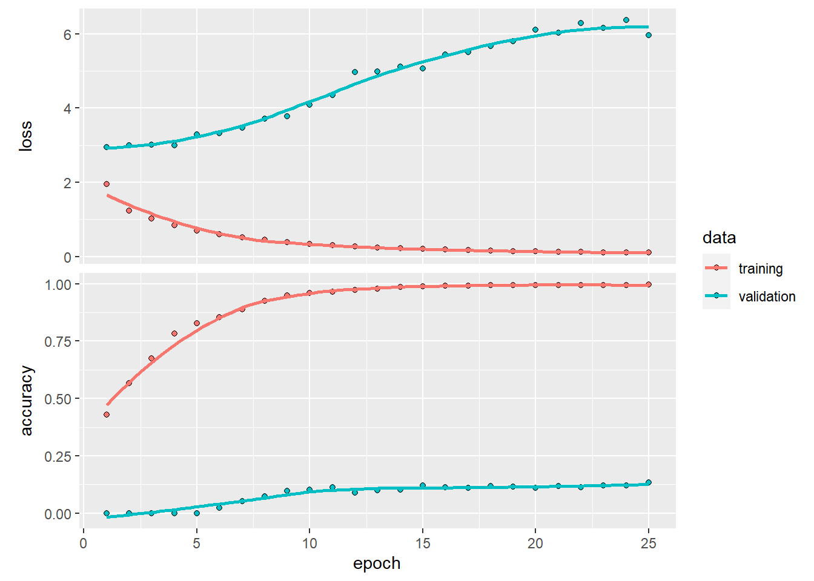
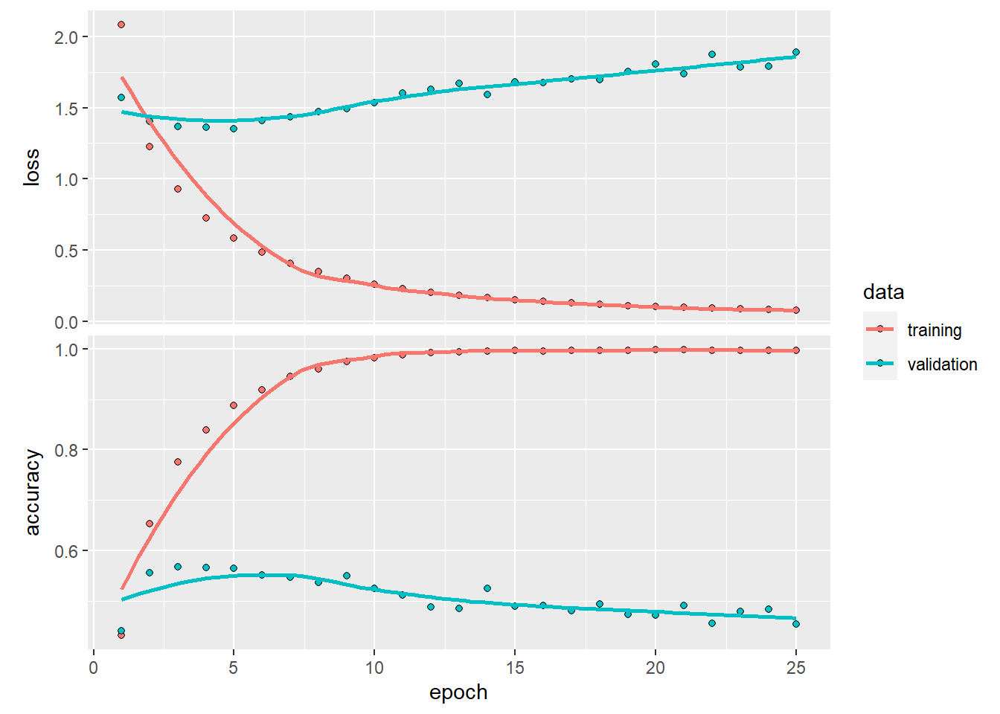

STA5073Z Assignment 1
Abstract
This study focuses on the aspect of machine learning and natural language processing to identify and rank various models for predictive purposes, specifically in the context of classifying sentences to South African presidents based on speeches from 1994 to 2022. The study explores the effectiveness of classification trees, feedforward neural networks (FFNN), and random forests while employing two different input structuring techniques: Bag of Words (BoW) and Term Frequency-Inverse Document Frequency (TF-IDF). The study draws from previous research, showcasing the versatility of BoW and TF-IDF in various applications and machine learning context in preparing text data for analytics. It also draws attention to the importance in choice between these techniques depends on the specific machine learning algorithms and kind of data being assessed. The findings reveal that FFNN performed slightly better than the other models but was still unable to effectively classify speeches to their respective presidents as the data was not equally representative of all the presidents.
Introduction
The aim of this paper is to identify different machine learning models that can be used for predictive purposes, and rank them according to their ability to do so. With presidential speech from 1994 to 2022 from South African presidents, this paper will review the capacity in which classification trees , feed forward neural networks and random forests are able to accurately classify sentences to their presidents. The input structuring process will also vary between bag of words and TF-IDF so as to ascertain which one is more suitable for the data at hand with a selected machine learning model.
Exploratory Data analysis
The dataset is made up of speeches across a span of 28 years by the last 6 presidents of South Africa. The number of speeches made by each president is different which can cause discrepancies in the model building process. F.W. de Klerk and Motlanthe have one recorded speech each, while Nelson Mandela and Cyril Ramaphosa have seven speeches each. In contrast, Jacob Zuma and Thabo Mbeki have given ten speeches each.
As one might naturally expect, the analysis of these presidential speeches highlights the diversity in the communication styles adopted by each president. While it is not uncommon for certain speeches to share common themes or objectives, there is a difference in words and terminology adopted to put across the messages. Figure 1 analysis offers a view into the evolution of linguistic patterns of the different presidents, excluding common stop words commonly found in sentences. A notable shift in the tone of State of the Nation addresses becomes evident when examined over the terms of the presidents.
During deKlerk’s term as president, a government-centric tone is evident, characterized by a significant focus on references to constitutional matters, political parties, and elections. Subsequent presidents, however, adopted a rhetoric that leaned more towards the betterment of the nation as a whole. Notably, Nelson Mandela and Thabo Mbeki, being the first two post-apartheid presidents, directed their attention towards themes of social welfare and national upliftment. Their primary objectives were to lead South Africa through a process of rebuilding and to dismantle the racial barriers that had long persisted under the rule of deKlerk (Mokhetsi, 2003).
In contrast, when Motlanthe, Zuma, and Ramaphosa assumed the presidency, there was a noticeable shift in their focus. They increasingly prioritized the task of fostering the country’s economic development. This transformation in presidential language and priorities underscores the dynamic trajectory of South Africa’s national agenda and the evolving role of its leadership in addressing the diverse needs and aspirations of the nation.
In addition to the specific words used by each president, the length of their speeches can also be seen as a predictor for which one of them made the speech. The figure below shows long long each presidents speeches run on average.

As mentioned before, the class imbalances present in the data pay a part in the outcome of the predictions and Figure 2 shows how much of difference there actually is. deKlerk’s speech comprised of only 97 sentences and this is a problem because he only has one speech in the dataset. Motlanthe also had one speech but he used almost 3 times as many sentences as deKlerk. The other presidents averaged about 250 words per speech, except for Ramaphosa who had an average of 327 sentences across his seven speeches. These differences in the number of speeches per president can lead to biased model outcomes. The models may be more inclined to predict or emphasize patterns or language styles associated with presidents who have a larger speech sample, potentially overlooking nuances in the speeches of presidents with fewer samples. To reduce the probability of this outcome, a stratified sampling approach is used, where the sampling proportion is not determined by the total number of observation in the data but rather by a set proportion to be sample from each president to allow for better representation. a random selection of 70% of the sentences made by each presidents are allocated to the training data and the remaining 30% to the test data.
Methods
Input Methods
Bag-of words
In the realm of natural language processing, Bag-of-Words (BoW) stands as a valuable text modeling tool. Its primary function is to facilitate the extraction of essential keywords from text while filtering out less critical information. The BoW process begins by establishing a vocabulary based on the words present in the text data. It then represents various speeches by quantifying the frequency of these keywords within each speech. The resulting dataset is an array of speeches against keywords, each entry reflecting the frequency of a specific keyword in a given speech. This foundational approach serves as the basis for machine learning models employed to classify speeches to the president that gave them. The machine learning models tradionally work with numerical data rather than textual data. Text data is unstructured and ML models can only operate with structured data that is well defined so by BoW technique the techniques can be integrated with more ease (Qader et al., 2019)
Notably, BoW has found applications in diverse contexts, such as a study in India where it was integrated with Convolutional Neural Networks to classify cases based on keyword analysis from case files. Remarkably, this study achieved an average accuracy rate of 85% (Pillai & Chandran, 2020). The following is a snippet of the BoW done on the SONA speeches. It shows the key words across all speeches as the columns of the array and the tally of each word in the sentence of a speech is in their intersection.
| Sent_ID | president_13 | commanders | comrades | corps | deputy | diplomatic | distinguished |
|---|---|---|---|---|---|---|---|
| 1 | Mandela | 1 | 1 | 1 | 3 | 1 | 1 |
| 2 | Mandela | 0 | 0 | 0 | 0 | 0 | 0 |
| 3 | Mandela | 0 | 0 | 0 | 0 | 0 | 0 |
| 4 | Mandela | 0 | 0 | 0 | 0 | 0 | 0 |
| 5 | Mandela | 0 | 0 | 0 | 0 | 0 | 0 |
Tf-Idf
Term Frequency- Inverse Document Frequency (TF_IDF) is another input method used for text modelling. It is similar to BoW in that it considers the number of times a word is used in a line of text however, it also factors in how important that word is relative to the other words in the document. The TF measures how frequently a term appears in a document by diving the total number of times the term appears in the document by the total number of terms within that document. This emphasizes the terms that occur more frequently than others. The IDF measures uniqueness/rarity of a term across a collection of documents. It is calculated by taking the logarithm of the total number of documents in the collection divided by the number of documents containing the term. The logarithm is used to scale down the impact of common words. The two part of the statistical measure are calculated as follows:
Term Frequency: (Number of times the term appears in the document) / (Total number of terms in the document)
Inverse Document Frequency= In(Total number of documents / Number of documents containing the term)
There have been studies conducted using both BoW and TF-IDF which found that TF-IDF generally out performed BoW when combined with ML models, however this will not always be the cases because there are countless ML algorithms that exist and each one has a particular method that will allow for the best fit with a given dataset. For example, a study conducted to identify hate speech in tweets found that TF_IDF performed best with Decision trees while BoW performed best with logistic regression, each method obtaining relatively high accuracies (Akuma et al., 2022).
| Sent_ID | president_13 | the | to | of | and | national |
|---|---|---|---|---|---|---|
| 3921 | Mbeki | -98.22858 | -41.35940 | -62.03910 | -46.52933 | 0.000000 |
| 4688 | Motlanthe | -98.22858 | -20.67970 | -49.11429 | -41.35940 | -10.339850 |
| 2887 | Mbeki | -82.71880 | -36.18948 | -69.79399 | -56.86917 | -2.584963 |
| 3790 | Mbeki | -56.86917 | -74.96391 | -38.77444 | -23.26466 | 0.000000 |
| 5200 | Zuma | -41.35940 | 0.00000 | -64.62406 | -20.67970 | -10.339850 |
Table 1 reveals distinct word weights within the sentences, where the weight of a given word varies depending on both the president and the specific sentence. A notable observation is that common words tend to exhibit extreme negative values so as to emphasize the uncommon words that can more easily identify a president’s sentence.
Predictive Models & Results
Classification Trees
A classification tree, often referred to as a decision tree, is as a visual and powerful decision-making tool employed for predictive tasks, for both classification and regression. It aims to forecast outcomes based on the variables of the observations. This decision tree begins at the root node, which initially hinges on the most influential variable for partitioning the dataset effectively. As it evolves, the tree expands by iteratively dividing the data using other attributes from the training dataset. The ultimate aim is to establish a series of decision rules that intuitively partition the observations into their appropriate classes or categories (Myles et al., 2004).

Figure 3 shows a classification tree constructed using the BoW approach to model the data. Notably, this tree exhibits a limited structure, with just three branches, resulting in the data being categorized into only two presidents, Mbeki or Zuma. This result is indicative of subpar classification performance. It implies that, according to the model, any sentence input is likely to be assigned to one of these two presidents, which is an oversimplified representation given that there are a total of six presidents in the dataset.
The subsequent table provides a detailed breakdown of the classification results using the test dataset, shedding light on the implications of this model’s performance.
| deKlerk | Mandela | Mbeki | Motlanthe | Ramaphosa | Zuma | |
|---|---|---|---|---|---|---|
| deKlerk | 0 | 0 | 1 | 0 | 0 | 28 |
| Mandela | 0 | 0 | 16 | 0 | 0 | 482 |
| Mbeki | 0 | 0 | 55 | 0 | 0 | 664 |
| Motlanthe | 0 | 0 | 9 | 0 | 0 | 68 |
| Ramaphosa | 0 | 0 | 0 | 0 | 0 | 680 |
| Zuma | 0 | 0 | 8 | 0 | 0 | 785 |
The recorded classification rate of this model was 30% meaning the model is performing better than random guessing but still has significant room for improvement. The possible reasons for this low classification are unclear as it could be attributed to the model’s performance itself or underlying issues with the data. As previously mentioned in the data analysis, the number of speeches each president makes is different with some making one and others making more than 5, causing a high degree of class imbalance.

The classification tree in Figure 4 is constructed using the TF-IDF. In contrast to the BoW approach, this tree exhibits a slightly more complex structure with four branches. However, it’s important to note that despite having more branches, the outcomes remain limited to just two presidents, indicating that the model’s classification performance is likely to be comparable to that of the BoW method.
| deKlerk | Mandela | Mbeki | Motlanthe | Ramaphosa | Zuma | |
|---|---|---|---|---|---|---|
| deKlerk | 0 | 0 | 10 | 0 | 0 | 19 |
| Mandela | 0 | 0 | 287 | 0 | 0 | 212 |
| Mbeki | 0 | 0 | 444 | 0 | 0 | 280 |
| Motlanthe | 0 | 0 | 46 | 0 | 0 | 33 |
| Ramaphosa | 0 | 0 | 260 | 0 | 0 | 425 |
| Zuma | 0 | 0 | 178 | 0 | 0 | 618 |
The classification rate achieved using the TF-IDF tool stands at 37.8%, demonstrating a slight improvement compared to the performance of the bag of words method, which doesn’t take into account the associated word weights. The table above shows how the observations are still only distributed between Mbeki and Zuma but this time the classification of the observations is more equally distributed between the two and the model is better able to predict sentences that belong to Mbeki. Nevertheless, this accuracy rate remains notably low, suggesting that a basic classification tree might not be the most effective predictive model for the speech text data under investigation. Consequently, the next model to be explored will build upon the foundation of these basic classification trees, aiming to enhance predictive performance and capture the underlying complexities of the text data.
Random Forest
Random Forest revolves around an ensemble of decision trees reinforced by bagging. Bagging, short for Bootstrap Aggregating, reduces variance and adds stability to these decision trees. It begins by creating multiple subsets of the training data, each of equal size formed by random selection with potential repetition. These bootstrapped subsets are then used to independently build individual decision trees, each providing a unique perspective on the text data. Once the trees are constructed, they collectively contribute to the final prediction through a majority vote. This aggregation enhances robustness and accuracy, particularly beneficial for text data (Shah et al., 2020)
Additionally, Random Forest introduces random feature selection, where only a subset of features is considered at each node during tree construction, helping to reduce correlation between the trees and avoid overfitting, which is a common challenge when dealing with high-dimensional text data (Shah et al., 2020). Additionally, it offers the capability to assess variable importance by considering the random feature selection, providing insights into the key elements that determine the president that said the given sentence. Figure 5 shows the error rate of the random forest as the number of trees increase.

As the number of trees in the model increases, it acquires a deeper understanding of the data, leading to a reduction in the error rate. Starting with an initial error rate of 60%, by the 20th tree, the model shows improvement, successfully decreasing the error rate by 10%. This method is computationally expensive and so only 20 trees were considered. At this point it is unclear whether an increase in the number of trees will improve the accuracy of the test or lead to diminishing returns. All that can be said is that the error rate is better than that of the previous model.
::: {#tbl-RF_CM_BOW .cell tbl-cap=’ Random Forest Confusion matrix for BoW model’} ::: {.cell-output-display} | | deKlerk| Mandela| Mbeki| Motlanthe| Ramaphosa| Zuma| class.error| |:———|——-:|——-:|—–:|———:|———:|—-:|———–:| |deKlerk | 10| 8| 17| 0| 11| 21| 0.8507463| |Mandela | 4| 315| 401| 3| 139| 296| 0.7279793| |Mbeki | 2| 215| 891| 2| 199| 375| 0.4709026| |Motlanthe | 0| 32| 69| 1| 30| 54| 0.9946237| |Ramaphosa | 0| 98| 287| 0| 819| 387| 0.4852294| |Zuma | 2| 121| 352| 2| 286| 1081| 0.4137744| ::: :::
For the presidents with fewer speeches in the dataset, such as deKlerk and Motlanthe, the error rates are notably high, with deKlerk reaching an error rate of 85.1% and Motlanthe experiencing a much more substantial error rate of 99.5%. Interestingly, this analysis reveals recurring patterns where a significant portion of deKlerk’s speeches are misclassified as Zuma, and Motlanthe’s speeches are predominantly classified as Mbeki.
On the other hand, for presidents with more speeches like Mbeki and Zuma, the error rates are comparatively lower, with Mbeki achieving an error rate of 47.1% and Zuma having an error rate of 41.4%. However, it’s worth noting that the error rate for Zuma’s speeches has seen an increase in comparison to previous models, while Mbeki’s error rate has seen a significant decrease. These observations shed light on the model’s performance in handling classes with imbalanced data, indicating potential areas for improvement in correctly classifying the speeches of less frequently represented presidents.

Figure 6 shows the top 30 most important features, each possessing a mean decrease Gini score exceeding 5. This score reflects the feature’s contribution to the reduction of Gini impurity, with higher scores indicating greater importance in the model’s predictive capability. The analysis has identified the two most influential words as ‘compatriots’ and ‘regard,’ both exhibiting mean decrease Gini scores exceeding 30. Following ,with a score of almost half, are ‘rand’ and ‘capture’ with mean decrease Gini scores just below 15. The same modelling is conducted on the TF-IDF data and the results were as follows:

The gradual decrease in error rate shown in Figure 7 is almost identical to the BoW model starting at about 60% and falling to 52% after 20 trees. This similarity may suggest that, at least up to this point, the additional complexity brought by the ensemble learning technique (as represented by the number of trees) yields a consistent and comparable improvement in predictive accuracy for both the BoW model and TF-IDF.
::: {#tbl-RF_CM_TF .cell tbl-cap=’ Random Forest Confusion matrix for TF-IDF model’} ::: {.cell-output-display} | | deKlerk| Mandela| Mbeki| Motlanthe| Ramaphosa| Zuma| class.error| |:———|——-:|——-:|—–:|———:|———:|—-:|———–:| |deKlerk | 1| 9| 19| 0| 7| 32| 0.9852941| |Mandela | 0| 246| 449| 3| 162| 306| 0.7890223| |Mbeki | 2| 237| 829| 1| 206| 419| 0.5106257| |Motlanthe | 0| 26| 74| 0| 33| 54| 1.0000000| |Ramaphosa | 0| 104| 253| 2| 731| 511| 0.5434104| |Zuma | 3| 124| 256| 3| 308| 1166| 0.3731183| ::: :::
?@tbl-RF_CM_TF presents class errors in the TD-IDF model for each president. In comparison to the BoW approach, only sentences attributed to Zuma and Mbeki exhibited improved performance. Other presidents experienced an increase in class errors. For instance, DeKlerk’s class error rose by 13%, while Ramaphosa’s class error saw an 8% increase. This shows how the TF-IDF was not effective across all the presidential classes although it did record a slightly higher overall classification rate of 51,1% compared to that of the BoW which was 50.6%. Figure 8 shows that the TF-IDF model had similar mean decrease Gini for the words of importance,with the addition of some stop words which were not remove in the case of this model such as ‘the’ and ‘of’

Feed Forward Neural Network (FFNN)
A feedforward neural network (FFNN) is a specific type of neural network architecture in which information flows in a unidirectional manner, from the input to the output, with no feedback loops from the outputs to the inputs. Neural networks are designed to recognize patterns in data and make more accurate decisions than traditional rule-based systems (Prasanna & Rao, 2018). A FFNN consists of three essential types of layers:
Input Layer: The input layer is the initial component of the network where raw data is introduced. The number of nodes in this layer is determined by the number of variables or features present in the dataset. Each node corresponds to one of these input variables.
Hidden Layer(s): Hidden layers do the bulk of the work in the neural network. They receive the data from the input layer through weighted connections, where each connection has an associated weight and bias. These weights and biases represent the strength and offset of the connection, and they are adjusted during the training process to optimize the network’s performance. Within the hidden layer, a mathematical transformation known as an activation function is applied to the weighted inputs. This activation function introduces a non-linear aspect to the data, allowing the network to capture more complex relationships within the data. Different types of activation functions can be used, impacting how well the neural network learns and generalizes from the data.
Output Layer: The output layer is the final stage of the network responsible for producing the predicted values or classifications for each observation. The number of nodes in this layer is typically determined by the number of classes in categorical data or the desired output format. Each output node represents the probability that an observation belongs to a specific. The class with the highest probability is selected as the network’s prediction.
Although the FFNN learns from the data, there are certain aspects of the model that need to be set. These are called hyperparameters. Selecting the right combination of hyperparameters is important because they affect the predictive ability of the model. In this study the hyperparameters considered were the learning rate, epochs and regularization. The learning rate is how quickly the neural network adjusts its weights during the training. a low learning rate is more likely to achieve the desired weights but at the cost of slow convergence. The number of epochs determines how many times the training data is passed through the entire network. A high number of epochs has the potential to overfit the data. the Regularization used was l1 regularization which reduces the impact of less important factors on the observations and works well for large data sets because it acts as a variable selection method. The learning rate used was 0.005 and the epochs were 25
While a Feedforward Neural Network (FFNN) learns from the data, certain model configurations, known as hyperparameters, play an important role and require careful consideration. These hyperparameters significantly influence the model’s predictive performance. The primary hyperparameters considered in this study were the learning rate, the number of epochs, and the choice of regularization technique.
The learning rate sets the rate at which the neural network fine-tunes its weights during training. Opting for a lower learning rate increases the likelihood of achieving the desired weight values but often results in slower convergence. This choice represents a trade-off between precision and the time required for the model to learn. The number of epochs determines how many times the entire training dataset is processed by the neural network. Choosing a high number of epochs can lead to overfitting, where the model adapts too closely to the training data but struggles to generalize to new, unseen data. L1 regularization is valued for its capacity to reduce the influence of less significant factors on observations. It is particularly effective with large datasets, which is why it is considered in this study, as it acts as a method for variable selection.
By thoughtfully selecting and configuring these hyperparameters, the study aims to optimise the FFNN’s predictive performance, achieving a balance between model precision, training efficiency, and resistance to overfitting. Figure 9 shows the accuracy and loss of the FFNN using bag of words as the number of epochs increases.

In the initial epoch of training, the model exhibited a relatively low accuracy of 50% on the training dataset. As the subsequent epochs unfolded, the model began weight adjustment for each node within the hidden layers. This iterative fine-tuning allowed the model’s accuracy to progressively increase, reaching an accuracy of approximately 98%. The validation accuracy plateaued at a lower level, hovering at around 15%. This disparity between training and validation accuracy highlights the challenges of ensuring the model’s ability to generalize to new, unseen data. ?@tbl-NN-CM-boW presents the results obtained from the test dataset after the final neural network has completed its training and weight adjustments.
::: {#tbl-NN-CM-boW .cell tbl-cap=’ Neural Network Confusion matrix for BoW model’} ::: {.cell-output-display} | | 0| 1| 2| 3| 4| 5| |:–|–:|—:|—:|–:|–:|—:| |0 | 5| 6| 8| 2| 1| 7| |1 | 0| 253| 129| 4| 13| 99| |2 | 0| 164| 380| 3| 16| 156| |3 | 0| 26| 31| 3| 2| 15| |4 | 0| 141| 108| 6| 89| 336| |5 | 1| 87| 124| 2| 26| 553| ::: :::
The test dataset yielded an accuracy of 45.9%, which is lower than the accuracy achieved by the previous BoW model. This suggests that the FFNN employing BoW as input features may not perform as effectively as a Random Forest classifier when utilizing BoW representations. Figure 10 shows the accuracy and loss of the FFNN using TF-IDF as the number of epochs increases.

Similar to the performance of the earlier neural network, the training dataset exhibited the capability to achieve high levels of accuracy as the model underwent training. However, this model was able to achieve high accuracy on the validation dataset, approximately 50% in the final epoch. During the initial stages of training, the validation accuracy showed an upward trajectory, reflecting the model’s ability to learn and improve its performance. However, this positive trend was followed by a decline in validation accuracy, which commenced around the 10th epoch. This is a sign overfitting. In essence, the model began to excessively adapt to the training data, losing its ability to generalize to new, unseen data. This emphasizes the balance that must be maintained during the training process to ensure that the model keeps its predictive power on diverse datasets. ?@tbl-NN-CM-TF shows the classification matrix of the test data on the neural network.
::: {#tbl-NN-CM-TF .cell tbl-cap=’ Neural Network Confusion matrix for TF-IDF model’} ::: {.cell-output-display} | | 0| 1| 2| 3| 4| 5| |:–|–:|—:|—:|–:|—:|—:| |0 | 9| 10| 4| 0| 2| 4| |1 | 2| 311| 123| 1| 38| 24| |2 | 0| 169| 404| 6| 59| 86| |3 | 1| 21| 35| 7| 4| 11| |4 | 0| 120| 40| 3| 428| 94| |5 | 0| 140| 101| 4| 137| 414| ::: :::
The model has achieved its highest level of test accuracy, standing at 55.9%. Notably, this model managed to decrease the number of misclassifications of observations as Zuma, who had the one of the highest number of observations in the training data. Mandela saw an increase in class accuracy as well as Ramaphosa
Discussion
Across the 3 predictive models that were built, the TF-IDF models were able to out perform the BoW models each time. Even though the accurary between the models was not that much the TF-IDF was still higher. This is in line with several studies that coined Tf-IDF as thet more superior input method when dealing with text data (Akuma, 2022). when considering the TF-IDF models, the neural network performed the best. This was not surprising given the ability of a neural network to deal with large complex data sets however there were signs of overfitting in the neural network compared to the random forest and classification trees. The neural network although being the best from the considered models, left much to be desired with a classification rate of 55,9%. Further research can be conducted on the kinds of models that can be used to increase accuracy of prediction on text data such as Convolutional neural networks which are primarily used for image classification but can still be applied in the natural language processing domain
Among the three predictive models constructed, the TF-IDF models exhibited better performance compared to BoW models. Despite the marginal difference in accuracy between these models, TF-IDF consistently outperformed BoW, aligning with previous research findings that have deemed TF-IDF as a superior input method for text data (Akuma, 2022).
In particular, when evaluating the TF-IDF models, the neural network emerged as the top-performing model. This outcome was somewhat expected, given the neural network’s capacity to handle large, complex datasets. However, it’s important to note that the neural network showed signs of overfitting when compared to the random forest and classification trees. While the neural network showed promise as the best-performing model within the considered set, it left room for improvement, achieving a classification rate of 55.9% for this type of text data.
To further enhance predictive accuracy in the realm of text data, future research could explore the utility of models beyond the traditional choices. For instance, Convolutional Neural Networks (CNNs), primarily known for their application in image classification, have shown promise in the domain of natural language processing as well (Pillai & Chandran, 2020). Investigating the potential of CNNs and other advanced techniques may offer opportunities to refine text data predictions and unlock even higher accuracy rates.
Conclusion
This study provides valuable insights into the application of various machine learning models and text structuring techniques for the task of classifying presidential speeches. The choice of model and data structuring method should align with the dataset’s characteristics and the specific objectives of the analysis. The Feed Forward Neural Network was the best performing model but the model accuracy was not as high as desired. Future work may involve the exploration of more advanced text analysis techniques and the utilization of additional features to improve classification accuracy and capture the evolving dynamics present in all types of text data.